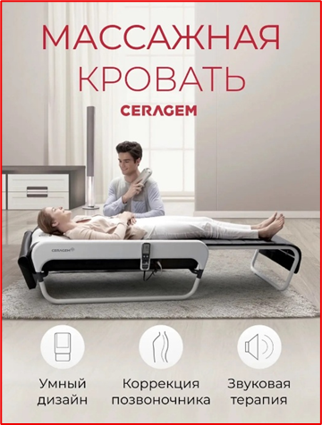

Сканирование позвоночника
Аппарат адаптируется под изгибы спины и выстраивает индивидуальную траекторию воздействия.
Механотерапевтическая кровать «Серагем» сочетает массаж, тепло и инфракрасное воздействие.

Аппарат сканирует изгибы позвоночника и адаптирует движение массажного механизма под пользователя.
Во время одного сеанса объединяются механическое воздействие, терапевтическое тепло, инфракрасное излучение и музыкальное сопровождение.
Аппарат адаптируется под изгибы спины и выстраивает индивидуальную траекторию воздействия.
Массажный механизм проходит вдоль позвоночника и воздействует на паравертебральные мышцы.
Тепловое воздействие способствует расслаблению и помогает поддерживать кровообращение в тканях.
Прогрев дополняет механический массаж и усиливает ощущение расслабления во время процедуры.
Спокойное звуковое сопровождение помогает снизить напряжение и настроиться на отдых.
В описании программы процедура рекомендована при мышечном перенапряжении после сидячей работы, хроническом дискомфорте в спине, а также тем, кто хочет снять стресс и восстановиться.
В предоставленном описании указано, что заметный эффект может проявиться после 3–5 сеансов: уменьшение дискомфорта и скованности, улучшение подвижности, осанки и сна. Результат зависит от состояния здоровья; процедура не заменяет диагностику и назначенное врачом лечение.
У процедуры имеются противопоказания. До записи сообщите администратору о состоянии здоровья и проконсультируйтесь со специалистом. Для детей возможность проведения процедуры согласовывается индивидуально.
+7 (900) 093-06-8618 минут — 500 ₽
36,5 минут — 1 000 ₽